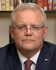

Prime Minister, welcome to the program. Thank you for your time.
Thanks, Leigh. Good to be with you.
Is the combination of coronavirus and the bushfires going to drive Australia into a recession?
I bloody hope not, because that would make me look bad!
Well, I'm not getting ahead of these issues.
[…]
What we need to do is ensure that the fiscal response that we will provide […] is very measured and […] scalable […].
And when will you be announcing the details of that package and where will it be targeted?
We'll be announcing those soon, Leigh, and we'll be announcing the key areas we'll be targeting on [sic] at that time.
And is 'soon' before the May federal budget because one assumes there's a degree of urgency here?
Yes it is.
I just enjoy not giving direct answers on the first ask.
[…]
[…]
The Reserve Bank has once again today cut interest rates to try to bolster the economy […]. The RBA and business leaders have been urging the Government to come up with a detailed fiscal plan […].
How is it possible that you don't have an economic centrepiece beyond a slogan for jobs and growth?
Well, I completely reject that, Leigh
along with everything else uttered on this program, unless it's about Labor.
I mean, last year alone we brought forward $4.2 billion worth of our program on infrastructure to address the very issues that you've just raised
especially in marginal electorates.
Last year, we passed tax cuts […]. […] the Government has been continuing to expand our trade borders […]
So I completely just don't accept that allegation, Leigh.
Well, let me run through some of it with you. [Income tax cuts'] effect on the economy has been muted when you look at the major indicators.
You have done nothing on IR, nothing on superannuation, nothing on GST reform, nothing big on company tax reform, no target for emissions reduction beyond 2030. Business leaders feel there's no agenda.
Well, I don't agree with them, Leigh,
along with everything else uttered by them, unless it's about Labor,
and at the beginning of the term […] I set out an agenda that dealt with infrastructure, that dealt with industrial relations in fact, quite specifically and…
Well […] why do you think business leaders are always out there saying "We need the government to be doing more?"
Well, let me take the issue they often make on emission reduction.
[…] I'm not going to put on a tax to reduce emissions nor am I going to put people's jobs
or votes
at risk or nor am I going to see rural and regional parts of the economy, which depend on industries, […] at risk.
We have an emissions reduction target […] and we've got a plan to achieve it which is more important. […]
But you seem to suggest that doing more would be costing jobs and potentially economic growth.
[Britain has] a net-zero-by-2050 policy. Since 1990 Britain's cut emission by 42 per cent and at the same time seen a 73 per cent increase in economic growth.
Well, […] the UK economy [is] quite different to the Australian economy, Leigh
along with the economy of any country in the world whose climate action credentials are better than Australia,
and you've got to have plans that relate to your own country. […]
[…]
[…]
[…] plenty of people that have targets but if you don't have a plan to achieve them, then […] you don't know what it's gonna cost, and you're gonna end up taxing people and threatening people's jobs
and votes
without a plan.
[…]
[…]
But when all of the states and territories in Australia have committed to a zero-emissions target by 2050, when […] Qantas […] and BHP […], […] peak business groups […], […] environmentalists and scientists are calling for it, why is the Federal Government determinedly isolated?
Leigh, I'm not going to commit to a target, when I can't look Australians in the eye and tell them what it costs
in votes
or how it's going to be achieved.
Have you done any modelling of the costs of not going to net zero by 2050?
That is why we do take action on climate change, Leigh. So the argument that it is about "Oh, what's the cost of not doing anything?" Well, we are doing something so I don't accept that argument.
[…]
[…]
Melbourne University […] found that the potential economic risk to Australia if global emissions patterns remain the same are [$]584 billion by 2020, and [$]762 billion by 2050.
Well, we're not planning to take no action, Leigh, so the argument is moot.
No, that's if patterns remain the same.
Well, we're not planning to have patterns remain the same.
We're planning to reduce emissions with a technology plan which will achieve that, but I'm going to do it in a way where I can look Australians in the eye and say, I'm not going to put a tax on you, I'm not going to take your job from you
or your votes from us
and I'm not going to undermine industries that are very important to rural and regional Australians. […]
[…]
[…]
You won't release the Gaetjens report into the sports rorts. Your office tried to conceal when you were on holidays in Hawaii in December.
The Government cited national security to avoid answering a question under FOI about whether Pastor Brian Houston was invited to a White House dinner […].
Why all the secrecy on stuff, that on the surface would seem to be not that big a deal?
Well, those things aren't that big a deal that you have talked about, Leigh,
apart from their being highly embarrassing,
and…
But why the secrecy then?
Oh, sod off.
Leigh, I'm just focused on the things that I took to the Australian people.
No no, I just want to know why the secrecy. You're not answering what I am asking.
I know I'm not. Screw you.
Leigh, well, I have disclosed the issues that you have referred to. […]
[…]
[…]
I'm putting to you three examples where there has been secrecy, but I can't understand why you would have secrecy around [them].
Say, for example, Brian Houston. You've said this afternoon you invited him to the White House.
Let me deal with the issue of the governance committee, Leigh.
[…] That is a governance committee of Cabinet which deals with very sensitive information
i.e. things which embarrass the government.
[…]
Well, what about the Brian Houston thing. Why did you keep that a secret?
Well, Leigh, at the time I was in the United States. We'd had a very important meeting with the President of the United States. It was not a matter I was intending to be distracted
or embarrassed
by.
And look, at the time, I could have answered the question differently. I have been up front about that
and by being up front now about not being up front before, I think everything cancels out,
but honestly […] it was not a significant matter, and people haven't asked me about it for months […]. […]
But the only reason I'm asking about it, because it is a minor matter, is because of the secrecy around it.
I mean, there was an FOI request put in about it that came back and said that the information couldn't be disclosed because it would jeopardise Australia's relationship with the United States.
Well, the allegations that were being made at the time when I was in the United States went around possible leaks out of the President's office. […]
As a guest in that country at the time
i.e. an arse-kisser
I didn't think that to be a very discreet way or diplomatic way to handle those questions.
Prime Minister, appreciate your time. Thank you for joining us this evening.
Thanks a lot, Leigh.